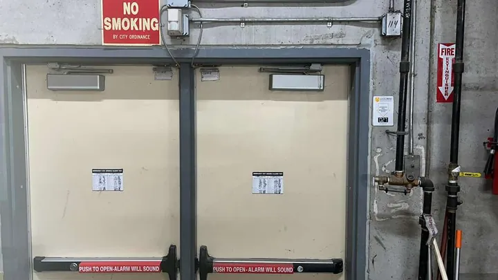

Our previous client work
Storefront Glass and Door Work Photos
Photos from previous client work by Capital Glass and Door Services.
- Storefront glass repair
- Emergency board-up
- Door hardware support
Our work: glass entrances, doors and hardware




Need help with a similar entrance?
Call to discuss a damaged glass entrance, door closer, panic bar or lock. For a quote, send a photo of your opening with your address or ZIP and urgency.
Storefront glass repair · Commercial door hardware · Locksmith services
Send your own damage photo
For a quote discussion, send a photo from a safe position. Include the address or ZIP, business or home, and urgency. Do not approach loose glass or disclose access codes in a public post.
Call or WhatsApp: which should you use?
Call vs WhatsApp
Active hazard or broken glass right now? Call. Not urgent or want a quote? Send a photo on WhatsApp.
Keep people away from damaged glass. Take photos only from a safe position.
What to send on WhatsApp
- A photo of the damage
- Your address and ZIP code
- Business or home
- How urgent it is
Related reading and service pages
Tell us what happened to your storefront
Call Capital Glass and Door Services at +1 703-244-0559, or send damage photos and your location on WhatsApp. Ask about availability, the repair scope and what happens next.